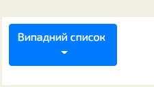
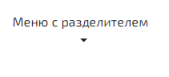
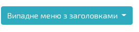
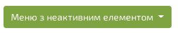
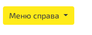
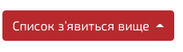

Цей урок продовжить серію заміток з розробки на Bootstrap, трохи підвищивши рівень. З попередніх уроків ви могли дізнатися, як працювати з текстом, таблицями, як верстати шаблони й створювати форми.
Для створення динамічних елементів Bootstrap має бібліотеку bootstrap.js. Вона працює в зв’язці з jQuery і дозволяє легко створювати об’єкти, з якими може взаємодіяти відвідувач вашого сайту. Це можуть бути модальні вікна, що випадають списки, вкладки, слайдери і так далі. Сьогодні мова піде про найпростіший з них — випадних списках.
Для своєї роботи скрипти Bootstrap вимагають jQuery, тому переконайтеся, що ця бібліотека підключена перед бутстрапом:
<script src="https://code.jquery.com/jquery.min.js"></script> <script src="https://maxcdn.bootstrapcdn.com/bootstrap/3.3.4/js/bootstrap.min.js"></script>
Створювати списки, що випадають на бутстрапа — суцільне задоволення. Ви можете налаштувати стиль таких списків за допомогою пари класів, а для їх роботи буде потрібно підключити jQuery і bootstrap.js.
Список, що випадає — це меню, видимість якого можна змінювати. В даному випадку список з’являється при кліці на зазначений об’єкт. Для прикладу нехай це буде кнопка. Ось приклад такого списку, реалізований на Bootstrap:

Код прикладу:
<div class="dropdown"> <button class="btn btn-primary dropdown-toggle" type="button" data-toggle="dropdown">Випадний список </button> <ul class="dropdown-menu"> <li><a href="#">HTML</a></li> <li><a href="#">CSS</a></li> <li><a href="#">JavaScript</a></li> </ul> </div>
Клас .dropdown потрібно привласнити блоку, який містить список. Для показу списку використовується кнопка або посилання з класом .dropdown-toggle атрибутом data-toggle="dropdown".
Клас .caret створить стрілку вниз (), щоб показати, що з’явиться список. І останнє: додайте клас .dropdown-menuсписку <ul>, щоб він став випадним.
<li class="divider"></li>
Елемент з класом .divider можна використовувати для розділення елементів всередині списку:

<li class="dropdown-header">Заголовок 1</li>
Ви можете позначити групи елементів всередині списку за допомогою класа .dropdown-header:

<li class="disabled"><a href="#">Архів уроков</a></li>
Щоб зробити елемент списку неактивним, додайте йому клас .disabled:

<ul class="dropdown-menu dropdown-menu-right">
Ви можете поміняти місце появи списку зі стандартного на появу зверху або праворуч. Щоб список з’являвся праворуч, призначте елементу <ul> клас .dropdown-menu-right:

Щоб список з’являвся вище кнопки, поміняйте клас .dropdown на .dropup:
